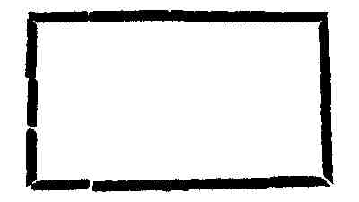

Kant: AA XVII, Reflexionen zur Metaphysik. , Seite 404 |
|||||||
Zeile:
|
Text:
|
|
|
||||
| 4071. κ3. M 71'. E II 373. 337. 354. Zu M § 239: |
|||||||
| 02 | Alle Der Begrif der Zeit ist ein einzelner Begrif. Denn alle Theile | ||||||
| 03 | der verschiedenen Zeiten sind nacheinander, folglich in einem ganzen Der | ||||||
| 04 | Zeit enthalten. Es können keine Zwey jahre zugleich seyn. Die Zeit hat | ||||||
| 05 | nur eine Abmessung, aber das Daseyn gemessen durch die Zeit hat zwey. | ||||||
| 06 |  nach |
||||||
| 07 | einander | ||||||
| 08 | zugleich | ||||||
| 09 | Der Raum ist nichts wirkliches, sondern eine Möglichkeit, die ihren | ||||||
| 10 | Grund in etwas wirklichem hat. Die Möglichkeit der Veränderungen der | ||||||
| 11 | Dinge gründet sich erstlich auf ihre Verknüpfung (denn ein Ding allein | ||||||
| 12 | würde sich nicht verändern), zweytens auf ihre abhängigkeit von einem andern; | ||||||
| 13 | denn das wesen, was seinem Daseyn nach nicht von einem andern | ||||||
| 14 | abhängt, würde sich nicht verändern können, ohne aufzuhören. | ||||||
| 15 | Man kan sich keinen Raum, e.g. Cubicfuß, denken, ohne einen | ||||||
| 16 | äusseren Raum, der ihn umgiebt, und also keinen Raum ohne in dem | ||||||
| 17 | Ganzen enthalten. Imgleichen keine zwei Räume ohne eine bestimte Entfernung | ||||||
| 18 | und Lage gegen einander. | ||||||
4072. κ3? μ? M 71'. E II 350. Zu M § 239: |
|||||||
| 20 | Die Verstandesbegriffe sind reflectirte Vorstellungen und haben auch | ||||||
| 21 | ihre Elemente der reflection; der Raum ist eine intuitive Vorstellung | ||||||
4073. κ1. M 71'. E II 1238. 361. Zu M § 239: |
|||||||
| 23 | Conceptus vel sunt intuitivi vel rationales reflexi. | ||||||
| 24 | priores vel intuitus sensitivi vel intuitus puri, qvatenus vel | ||||||
| 25 | materia vel sola forma repraesentationis sensitivae inest. conceptus reflexi | ||||||
| 26 | vel sunt etiam empirici vel puri; priores sunt conceptus universales | ||||||
| 27 | materiam a sensibus datam continentes, posteriores formam tantum | ||||||
| [ Seite 403 ] [ Seite 405 ] [ Inhaltsverzeichnis ] |
|||||||
;){kind=link}